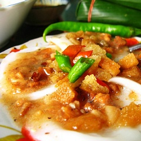

-
Bánh bèo Đà Nẵng
Từ lâu, bánh bèo, bánh ướt đã trở thành món ăn vô cùng quen thuộc đối với người dân Đà Nẵng bởi sự dân dã, mộc mạc từ nguyên liệu đến hương vị của nó. Người dân Đà thành có thể ăn bánh bèo vào bất cứ thời điểm nào trong ngày, nó có thể dùng như là món chính hoặc món ăn vặt cho tất cả mọi người. bánh bèo, bánh ướt Bánh bèo cũng có rất nhiều loại được phân biệt bởi hình dáng và cách ăn bánh bèo. Bánh bèo tai thì nhỏ bằng lỗ tai được sắp sẵn lên đĩa mà thường là đĩa thiết ăn mới ngon, bánh bèo chén được đúc sẵn trong chén tròn nhỏ, trẹt miệng còn bánh ướt được bày trong đĩa và cắt khúc. Và tất cả đều có một điểm chung là rắc nhân lên trên mặt bánh (người Đà Nẵng vẫn gọi là “nhưn”). bánh bèo, bánh ướt “Nhưn” bánh bèo, bánh ước được làm từ tôm, cá bào lấy thịt, bỏ xương, sau đó ướp gia vị và sấy khô queo trên than hồng cho không còn mùi tanh nữa, bởi vậy khi ăn vào miệng thực khách sẽ chỉ nghe thi thoảng mùi bùi bùi, béo béo. Ngoài ra vẫn có loại “nhưn” được làm từ thịt nạc, nấm mèo…tạo nên một loại hỗn hợp đặc quánh có màu cam tươi rất đẹp mắt mà tôi vẫn thường gọi là “nhưn ướt” nhằm tăng thêm nhiều mùi vị cho món ăn dân dã này. Bánh bèo còn được ăn kèm với nem chua, chả bò cây hoặc có thể là chả lụa khi ăn bánh ướt. bánh bèo, bánh ướt Tuy nhiên, món bánh bèo, bánh ướt có ngon hay không được quyết định bởi nước mắm ăn kèm. Nước mắm của bánh bèo rất đơn giản, đó là mắm ớt tỏi bằm nhuyễn được pha loãng với nước sôi nguội thêm ít chanh và đường, tất cả tạo nên vị thanh ngọt, chua chua rất đặc trưng. Thực khách ngồi chồm hổm quanh gánh bánh, vừa ăn vừa húp thứ nước mắm có vị ngọt thanh và thơm hương chanh, thỉnh thoảng kề đĩa cho người bán: “Cho con thêm chút mắm”, “Vắt thêm chút chanh dì ơi” đã trở thành hình ảnh thân thuộc với người dân địa phương. Bạn có thể tìm thấy các quán bánh bèo, bánh ướt bánh lọc ở bất kỳ con phố, ngõ hẻm nào trong thành phố. Thậm chí nếu du khách ở ngay tại khách sạn, vẫn có thể thưởng thức các món ăn dân dã này, chỉ cần chiều chiều ra ban công vừa hóng gió, vừa lắng tai nghe tiếng rao: "Bánh bèo, bánh ướt đây" của các chị gánh dạo, là đã có ngay một dĩa bánh ngon lành.
